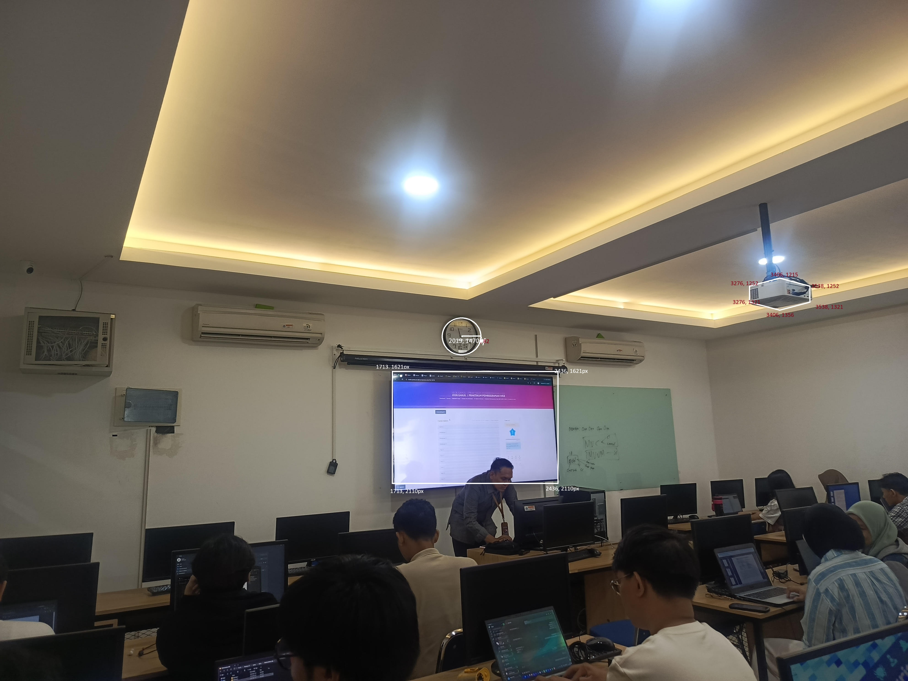

Arahkan penunjuk tetikus ke tiga bagian gambar di bawah ini. Setiap bagian memiliki bentuk area yang berbeda dan akan membawa Anda ke keterangannya.

Koordinat di atas diukur menggunakan penunjuk posisi piksel pada aplikasi pengolah gambar. Berikut tangkapan layar proses pengukurannya.